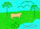

Página
para os Seres Humanos de Pouca Idade
.
.
Mico
Munico e Quati Curioso em:
De
onde vem o vento?
A. Ventura
VMico Munico
e Quati Curiosostaeja que dia lindo? disse Mico MunicoUm certo dia de sol,
Mico Munico
estava passeando pelo mato com seu amigo Quati
Curioso,
quando encontraram
um riacho.
– Olha, lá
adiante estou vendo um riozinho
– disse Mico
Munico de cima de uma árvore.
Quati Curioso
apressou-se e ao chegar mais perto, exclamou:
– Olha que lindo
este riozinho!
Eu bem que estava
sentindo cheiro de limo aqui pelo chão.
– Também,
com este teu narigão ...
– Sentir bem
os cheiros é uma característica da minha família e
de todos os quatis.
– Ah, então
é por isto que tu ficas furungando com teu nariz em tudo?
– Mas é
claro, pois é assim que sentimos qualquer cheirinho de comida,
mesmo quando
alguma deliciosa frutinha
esteja meio
escondida embaixo da folharada do chão do mato.
– E tu estás
sentindo cheirinho de comida aqui por perto?
– Sim, e parece
que é de guabiroba.
– Oba!! É
mesmo, já estamos em dezembro, época de guabiroba.
Vamos correndo
para lá.
E depois de
encherem a barriga com estas saborosas frutinhas amarelas do mato,
foram caminhar
tranqüilos ao longo do riacho.
– Ei,
olha lá o mar! – gritou Mico Munico
de cima de outra árvore.
– Venha ver
daqui de cima.
Apesar de não
ter tanta destreza nas árvores como Mico
Munico
que é
um macaco-prego,
lá se
foi Quati Curioso,
subindo rápido para o alto da árvore.
– É mesmo,
e está bem pertinho. Dá para a gente ir lá brincar...
– Isso mesmo,
vamos lá!
Desceram pendurados
num cipó e foram correndo brincar na praia
e nas margens
do riacho que ali deságua no mar.
– Mico
Munico, por que o mar é salgado se
a água que chega nele
é dos
rios e da chuva que são de água doce?
– Humm, sabe
que eu não sei e nunca tinha pensado nisto?
– Como é
que poderemos saber? – perguntou Quati Curioso.
– Podemos perguntar
para nossa amiga, a Dona Corujalina.
E lá
se foram os dois correndo e brincando pelo campo,
até a
toca da Dona Corujalina.
Ela é
destas corujas buraqueiras
que até
de dia estão atentas a tudo o que acontece.
Tem fama de
saber de tudo e resolver qualquer mistério.
Chegando lá,
Mico Munico perguntou:
– Boa tarde
Dona Corujalina.
Estamos necessitando solucionar um mistério, e achamos que a senhora
pode nos ajudar. Gostaríamos de saber como o mar é
salgado se a águas dos rios e da chuva que chegam nele são
doces?
Dona Corujalina
pensou profundamente, e chegou a uma solução.
Quem saberia
responder era o seu amigo Olfinho, Hugo Olfinho,
que mora no
mar, e é muito viajado por este mundo.
Ele sim poderia
responder com segurança esta questão.
– Mas como vamos
chegar até ele no meio do mar?
– perguntou
Mico Munico,
meio preocupado,
pois não
gostava muito de águas profundas.
– Não
há problema. Minha amiga Martaruga
leva vocês. Venham.
Tudo combinado
com Martaruga,
ela tratou de
prender em cada um de seus braços
um par de porongos
para agüentar o peso extra sem afundar
e tranqüilizou-os
dizendo:
– Não
tenham medo, eu sou uma tartaruga-de-pente.
Sou duma espécie
que passa a vida toda no mar.
Sei nadar e
mergulhar muito bem e tenho mais de cem anos de experiência.
Diante de toda
aquela idade,
eles ficaram
mais tranqüilos e se acomodaram como puderam
sobre o casco
da grande tartaruga.
– No sobe-e-desce
do mar,
eles iam olhando
ao longe para tentar enxergar os golfinhos
na hora em que
eles vêm renovar o fôlego na superfície.
– Ei, lá
estão eles! – disse Mico Munico,
mostrando a
direção e abanando os braços.
Logo Hugo
Olfinho avistou aquela agitação
e aproximou-se
saltitante e
alegre como sempre, dizendo:
– Oi, Martaruga!
O que fazes carregando estes dois nas costas?
– Venho numa
missão especial, a pedido da Corujalina.
Estes são
Mico Munico e
Quati Curioso,
amigos dela e agora também meus amigos.
Eles querem
lhe fazer uma consulta.
Mico Munico,
desinquieto com aquele instável equilíbrio da “embarcação”
em que se encontravam,
foi logo perguntando:
– Senhor
Hugo, a Dona
Corujalina sabe que o senhor além de
muito inteligente,
viaja bastante,
conhece muita coisa do mundo, e que talvez
possa nos responder
uma grande dúvida.
– Se eu souber,
será um grande prazer ajudar, mas não me chame de senhor,
pois, apesar
de mais velho,
eu gosto de
manter meu espírito jovem convivendo e brincando com a criançada.
– Pois bem,
nós gostaríamos de saber por que o mar é salgado,
se as águas
que chegam nele são doces?
– Ah, isto é
simples de explicar. É algo que vem acontecendo há
muito tempo,
desde a formação
da terra, há bilhões de anos atrás.
Os fenômenos
climáticos como as geleiras, o sol, ventos, chuvas, etc.,
vêm desgastando
e dissolvendo as rochas das montanhas e terras altas.
Estes materiais
dissolvidos são transportados pelos rios.
O que for mais
pesado vai ficando depositado pelo caminho, nos vales.
Uma parte dos
componentes, inclusive muitos tipos de sais,
são transportados
até o mar.
– Então
porque não sentimos gosto salgado nos rios como no mar?
interpelou Quati
Curioso.
– É que
a quantidade de sais na água dos rios é muito pequena
para que possamos
sentir o gosto.
– Mas como o
mar ficou tão salgado então? perguntou Mico
Munico,
enquanto se
equilibrava no casco da grande tartaruga.
– Ah!
Esta é uma boa pergunta.
É que
a água do mar evapora constantemente para voltar a formar nuvens
e chuva, mas os sais não evaporam junto, permanecendo diluídos
na água do mar.
– Então,
– concluiu Mico Munico
perguntando
– como as chuvas
trazem sais pelos rios e estes sais não voltam com as novas nuvens
e a chuva, com o passar dos tempos a concentração de sais
no mar foi aumentando, e ele foi ficando cada vez mais salgado.
– Exatamente.
– confirmou Hugo Olfinho,
feliz por ter podido satisfazer
a curiosidade
daqueles jovens.
Eles agradeceram
a todos e foram felizes para casa contar aos pais
e aos amigos
que haviam entendido
mais este mistério da natureza.
Copyright © 1998 CEPEN
Permitido imprimir, reproduzir e divulgar, desde que
sem fins lucrativos e citando autor e fonte.
Autor: A.Ventura
Fonte: CEPEN
.